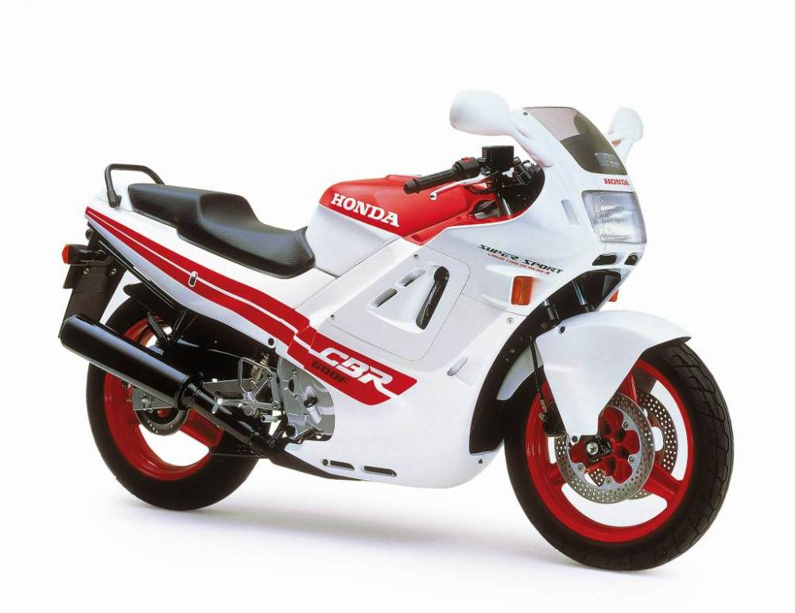

Introducción

Desde que naciera la primera Honda CBR600F, varias generaciones de moteros han soñado con las sport-turismo tetracilíndricas de cilindrada media de Honda. Unos modelos que lo mismo reinaban en competición como en viajes en solitario o a dúo. Era la polivalencia deportiva por excelencia, y ha sido uno de los modelos más emblemáticos. Por eso, ha llegado el momento de repasar la historia de la Honda CBR600F, porque es un modelo que ha hecho soñar a muchas generaciones.
¡Conoce mi historia!
- Veremos la evolución que ha sufrido a lo largo de los años.
- Pasión por el motor y por cada una de sus piezas fundamentales.
- Calidad y comodidad en cada una de sus componentes.
- Mejora en fiabilidad y confianza para su conducción.
- Inscribete y forma parte del grupo HONDA.